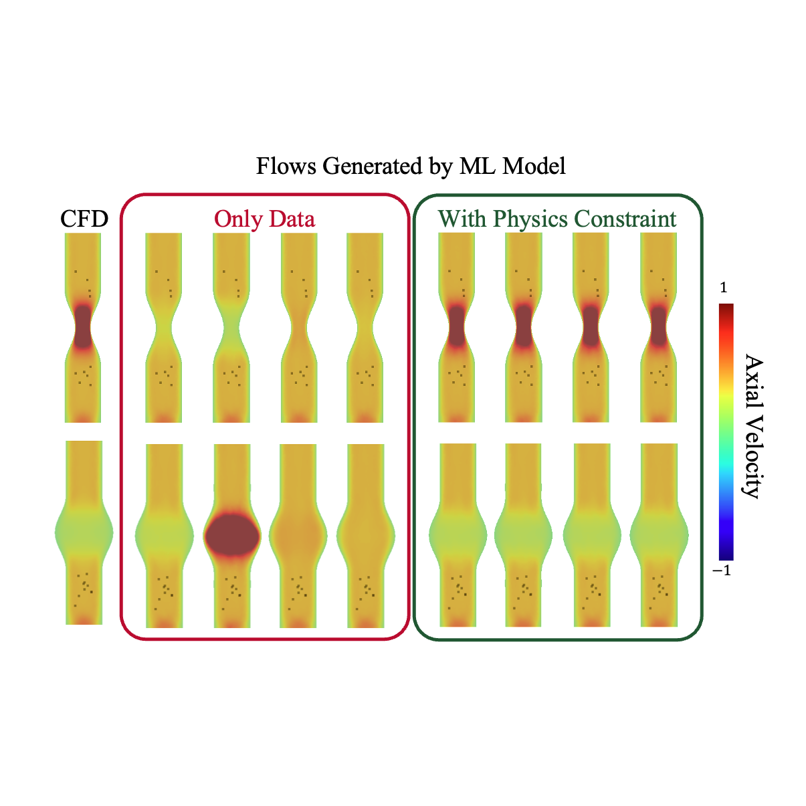
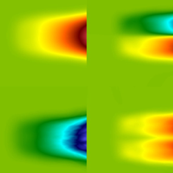
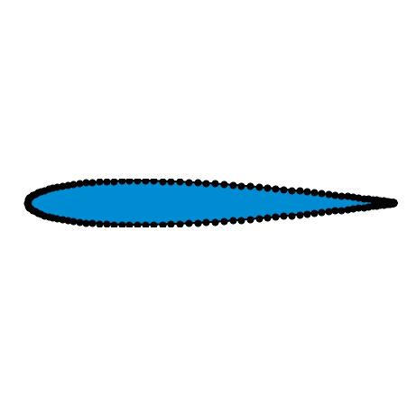
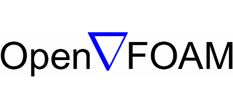

Dana Lavacot
Applied Mathematician @ Boeing
Stanford Ph.D., UC Berkeley B.S.
About Me
|
I am a computational scientist passionate about traditional and AI-based computational methods for understanding complex physical systems.
Through more than five years of experience in scientific computing, I have developed a solid technical toolbox, including scientific programming in Python and C++, machine learning with PyTorch, and collaborative software development using GitHub. I am also experienced with several commercial and open-source CFD softwares, including STAR-CCM+ and OpenFOAM. My work—spanning my postdoctoral (WashU), Ph.D. (Stanford), and undergraduate (UC Berkeley) research—has involved data-driven and physics-based computational modeling of a variety of physical systems, including: In my free time, I enjoy drawing, gardening, knitting, and 3D printing. |
Research
|
My research interests are in computational fluid dynamics and scientific machine learning.
My postdoctoral research focuses on machine learning methods for computational modeling of the heart.
My Ph.D. thesis focused on turbulence modeling for Rayleigh-Taylor instability using the Macroscopic Forcing Method.
For a full list of my publications, please see my Google Scholar. |
Diffusion-based Machine Learning for Cardiovascular Flow Reconstruction
|
 |
Echocardiography (echo) is a medical imaging technique that allows for real-time visualization of cardiac structures at the bedside.
Coupled with color Doppler, echo provides useful information about the hemodynamics in the heart that is commonly used by clinicians for diagnosis and treatment planning.
However, echo and Doppler images are often noisy and sparse, leading to substantial uncertainties in blood flow measurements.
This work aims to reconstruct full spatio-temporal flow fields in the heart from echo measurements using machine learning. We employ a diffusion-based probabilistic model to allow for uncertainty quantification of the flow predictions. Additionally, we enforce physical constraints to ensure the generated fields are consistent with not only the echo data but also the governing Navier-Stokes equations. |
Non-locality in Turbulent Rayleigh-Taylor Instability
|
 |
Rayleigh-Taylor (RT) instability, when a light fluid is accelerated into a heavy fluid, can occur in inertial confinement fusion (ICF) and significantly reduce energy output.
Thus, it is important to accurately model RT mixing during the ICF experiment design process.
This work investigates the importance of non-locality in modeling turbulent RT mixing using the Macroscopic Forcing Method, a numerical approach to determine turbulent closure operators from high-fidelity simulations.
Related publications:
|
Aerodynamic Shape Optimization using Deep Learning
|
 |
Physical data usually exist on irregular grids due to complex geometries encountered in real world problems.
In this work, we present the Deep Differentiable Shape Layer (DDSL), which leverages the non-uniform Fourier transform to facilitate deep learning on arbitrary geometries.
I derived the analytical derivative for the transform, to allow for fast backpropagation for neural network training as well as shape optimization after training.
I demonstrated the utility of the DDSL in the optimization of airfoil shapes for low lift-drag ratios.
Related publications:
|
3D Printing
|
|
Skills


